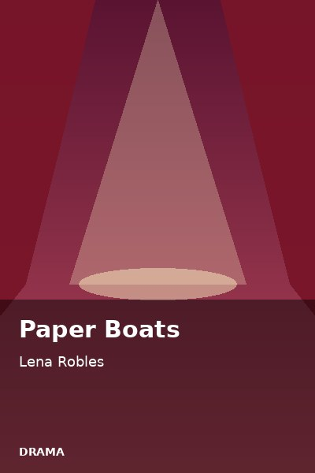

Drama
Paper Boats
Synopsis
A girl and her father fold paper boats during the monsoon season, one for every worry.
Chapter 1: Flood Season

When the rain would not stop, Lani's father sat at the kitchen table and folded newspaper into small white boats. He told her each one carried a worry away.
They set them afloat in the street, and the boats sailed past the sari-sari store and under the bridge. For one evening, the flood felt like a river of small, brave ships.